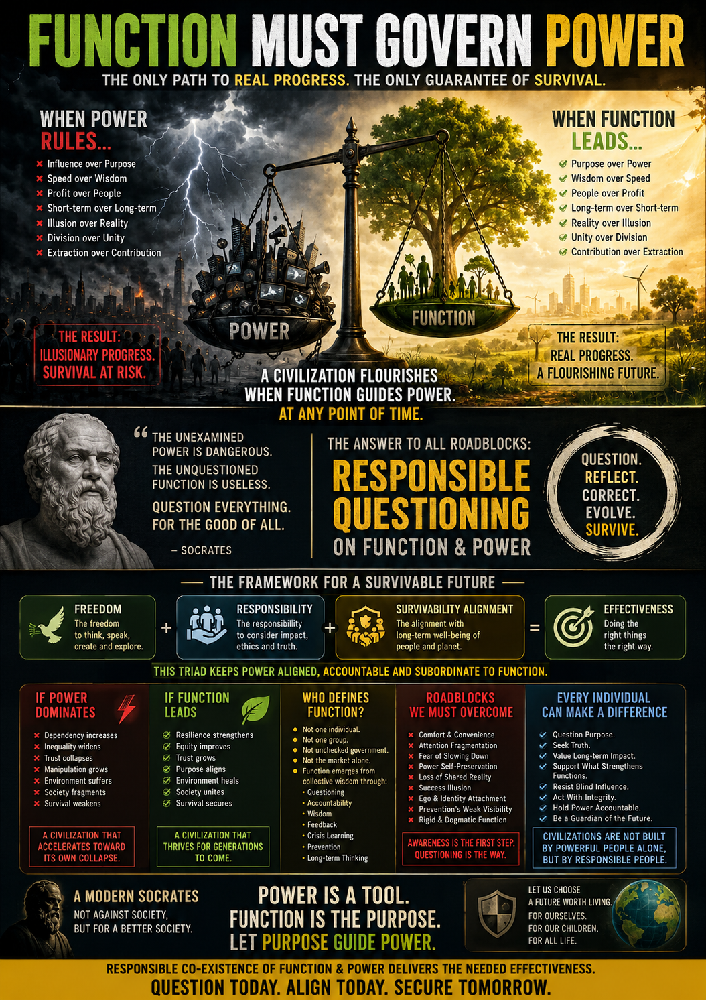

“A civilization does not collapse because it lacks power. It collapses when power escapes survivable function.”
The Civilizational Divergence
Ancient civilizations possessed limited power but remained tied to foundational functions: survival, accountability, and collective memory. In contrast, the modern world wields unprecedented amplification—AI, algorithmic influence, and attention economies—yet suffers from an internal fragility where power seeks its own expansion.
The Governance of Progress
| Function (Purpose) | Power (Amplification) |
|---|---|
| Rooted in necessity, wisdom, and long-term thinking. | Rooted in scale, influence, and execution capability. |
| Asks: "Does this strengthen long-term survival?" | Asks: "How can we scale, dominate, or accelerate?" |
| Stabilizes the internal core of civilization. | Accelerates external reach without direction. |
The Root of Modern Chaos
Modern systems often optimize influence over function. This shift is driven by:
- Short-Term Incentives: Immediate gains over long-term responsibility.
- Attention Economies: Human focus as a resource for extraction.
- Invisible Prevention: Successful prevention appears invisible, so it is rarely rewarded.
The Socratic Maintenance
Responsible questioning is not negativity; it is a stabilizing mechanism.
- Functional Clarity: What function does this truly serve?
- Scale Risk: What risks emerge after this scales?
- Dependency Check: What long-term dependencies are being created?
“At every stage of human advancement, FUNCTION must govern POWER to preserve survivable realities.”